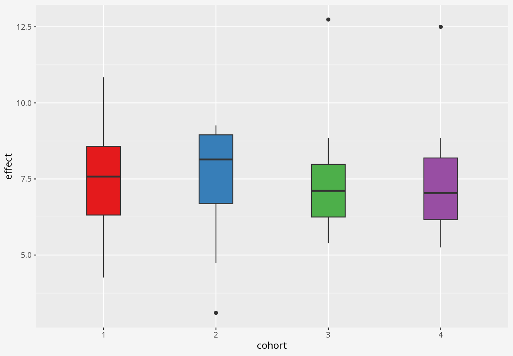

Callout-case-studyCase Study
Over the course of a small study, you attempted to evaluate the effect of a drug on four different matched cohorts of 11 individuals, specifying dosage per individual and measuring the drug effect.
The interactive examples below ask you to visualise alternative representations of this data.
Note
In this dataset, cohort is a categorical variable, but dosage and effect are continuous variables.
Callout-dataClick to view the complete dataset as a table
1 Visualising numerical datasets
Callout-challengeChallenge
In the interactive examples below, you can select alternative visualisations of the case study dataset, and decide for yourself which presents the most appropriate story about the data.

Callout-questionsQuestions
- Did any of the visualisations give a good summary account of the data, and why did you think so?
- Did any of the visualisations give a poor summary account of the data, and why did you think so?
- If someone presented a bar chart as a summary of measurements in a dataset, would you think that was a reliable visual representation?
- What kinds of problems in these datasets were disguised by each visualisation approach?
Callout-hintsHints
- Does the visualisation describe the data, or only a summary of the data?
- Does the visualisation let you easily tell the difference between two datasets with similar summaries, but different data?
- Does the visualisation introduce elements that imply the presence of data which is not in the dataset?
2 Visualising correlations
Callout-dataData Analysis
In the interactive window below, you can select alternative visualisations of the case study dataset, and decide for yourself which presents the most appropriate story about the data.
Callout-questionsQuestions
- Do the parameters or correlation coefficients of the fitted linear regressions differ by cohort?
- Do the linear regressions give a good account of the relationship between dosage and effect, in each case?
- Does the plotted uncertainty in the linear regression capture the variation between the real data, and linear regression?
- Are there any signs of systematic problems in the data?
- What kind of visualisation is most helpful to understand these datasets?
Callout-hintsHints
- Does the regression fully describe the data, or is it only a summary of the data?
- Does the uncertainty in the regression adequately describe the variation of the data with respect to the fitted line?
- Which visualisations best allow you to see differences between the datasets?